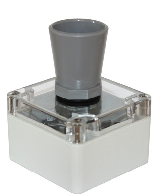
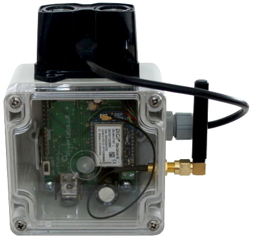

Logger Identification Guide¶
Overview
Riverlabs produces two main logger models: Wari (ultrasound) and Lidar. This guide helps you identify your model and understand its capabilities.
Model Comparison¶
-
Wari Logger
Ultrasound Distance Sensor

Sensor: Maxbotix MB7389
Range: 0.3m - 5m
Resolution: 1mm
Beam Angle: Wide (~15°)Best For:
- Water level monitoring
- Budget-conscious projects
- Shorter range applications
- Vertical mounting positions
-
Lidar Logger
Laser Distance Sensor

Sensor: Garmin Lidarlite v3HP
Range: 0.05m - 35m
Resolution: 1cm
Beam Angle: Very narrow (~0.5°)Best For:
- Long-range measurements
- Angled installations (up to 40°)
- High-precision applications
- Difficult mounting situations
Detailed Specifications¶
Wari (Ultrasound)¶
| Specification | Value | Notes |
|---|---|---|
| Sensor Type | Ultrasonic | Maxbotix MB7389 HRXL |
| Measurement Range | 0.3m - 5m | Practical range ~4.5m |
| Resolution | 1mm | Under ideal conditions |
| Accuracy | ±1% | Temperature dependent |
| Beam Width | ~15° cone | Requires obstacle clearance |
| Mounting Angle | Vertical preferred | Angled mounting reduces accuracy |
| Target Surface | Water, solid objects | Good water surface reflectivity |
| Temperature Range | -40°C to +65°C | Sensor operating range |
| Power Consumption | ~50mA active | Low power between readings |
| CPU | Atmel Atmega328 | Arduino Pro Mini compatible |
Advantages:
- ✅ Lower cost
- ✅ Proven technology
- ✅ Good for typical water levels
- ✅ Simple to use
Limitations:
- ❌ Limited range (5m maximum)
- ❌ Requires vertical mounting
- ❌ Needs clear zone around beam
- ❌ Temperature affects accuracy
- ❌ Minimum distance 0.3m
Lidar¶
| Specification | Value | Notes |
|---|---|---|
| Sensor Type | Laser rangefinder | Garmin Lidarlite v3HP |
| Measurement Range | 0.05m - 35m | Depends on target reflectivity |
| Resolution | 1cm | Consistent across range |
| Accuracy | ±2.5cm | Up to 40m |
| Beam Divergence | 8 milliradians | Very narrow, <1° effective |
| Mounting Angle | Up to 40° | Minimal accuracy loss |
| Target Surface | Most surfaces | Best with rough/turbid water |
| Temperature Range | -20°C to +60°C | Sensor operating range |
| Power Consumption | ~100mA active | Higher but infrequent |
| CPU | Atmel Atmega328 | Arduino Pro Mini compatible |
Advantages:
- ✅ Extended range (35m)
- ✅ Can measure at angles
- ✅ Very narrow beam (tight spaces)
- ✅ High precision
- ✅ Works from 5cm
Limitations:
- ❌ Higher cost
- ❌ Reflectivity dependent
- ❌ Higher power draw when active
- ❌ Poor performance on smooth/clear water
Physical Identification¶
Finding the Model Number¶
Model Number Location
The model designation is typically found on a label on the back of the enclosure or inside the battery compartment.
Look for:
- "Wari v1", "Wari v2", "Wari v2.1" - Ultrasound models
- "WMOnode", "Lidar" - Lidar models
Visual Identification¶
Even without labels, you can identify the logger by its sensor:
Sensor Appearance:
- Cylindrical sensor housing
- Mesh grille front face
- Usually gold/brass colored ring
- Larger diameter (~2.5cm)
- Visible transducer behind mesh
Cable:
- Typically 3-4 wires
- Connector or direct solder
Sensor Appearance:
- Rectangular black housing
- Small circular lens aperture
- Compact size (~4cm x 2cm x 1.5cm)
- Red laser warning label (may be present)
Cable:
- 6-pin JST or similar connector
- Color-coded wires
Use Case Selection¶
Choose Wari Ultrasonic If:¶
- ✅ Measuring water levels in typical conditions
- ✅ Range requirement is under 4 meters
- ✅ Can mount sensor vertically
- ✅ Budget is a primary concern
- ✅ Simple setup is preferred
- ✅ Sufficient clearance around measurement point
Typical Applications:
- Small stream monitoring
- Tank level monitoring
- Irrigation canal measurements
- Rain gauge verification
- Shallow well monitoring
Choose Wari Lidar If:¶
- ✅ Need measurements beyond 5 meters
- ✅ Must mount at an angle
- ✅ Working in confined spaces
- ✅ Require maximum precision
- ✅ Very smooth/clear water surface
- ✅ Close-range measurements (<30cm)
Typical Applications:
- Large river monitoring
- Bridge clearance monitoring
- Deep well measurements
- Angled installations
- High-accuracy applications
- WMO standard installations
Now that you've identified your logger:
- Return to Quick Start Guide to continue setup
- Review First Deployment Checklist
- Plan your installation with the Mounting Guide
- Understand power requirements in Battery & Power Guide
Questions?¶
If you're still unsure which model you have:
- Check for any documentation included with your logger
- Look for order/invoice information from Riverlabs
- Contact support with a photo: info@riverlabs.uk
Hardware Evolution
Riverlabs continuously improves logger designs. The information here reflects current models. Older units may have slight variations but maintain compatibility with current documentation.